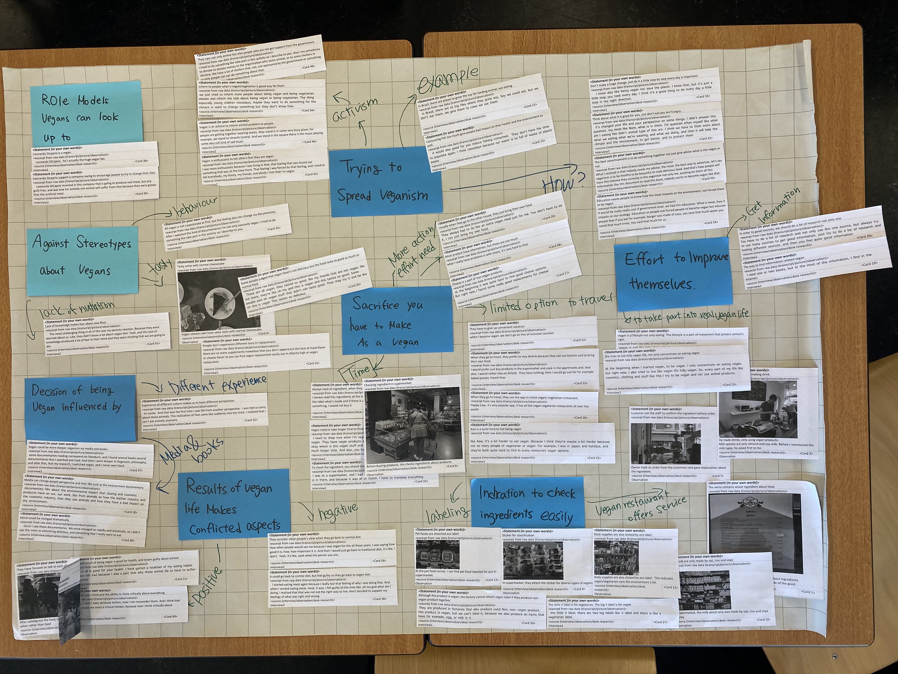
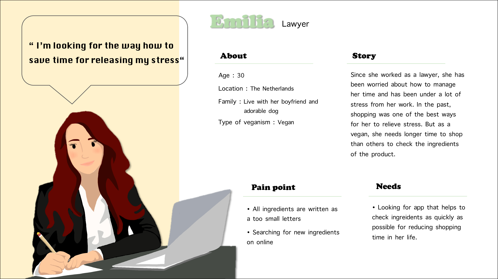

<!DOCTYPE html>
<html lang="en">

<head>
  <link href="css/project1.css" rel="stylesheet" />
  <meta charset="UTF-8" />
  <meta http-equiv="X-UA-Compatible" content="IE=edge" />
  <meta name="viewport" content="width=device-width, initial-scale=1.0" />
</head>

</html>

<body>
  <nav>
    <div class="box_1">
      <a href=./index.html>Portfolio</a>
    </div>
    <div class="box_2">Project</div>
    <div class="box_3">
      <a href="./About_me.html">About</a>
    </div>
  </nav>
  <header>
    <!--top of the page = name and picture-->
    <div class="top_cover">
      <div class="box_colour">
        <p><span>How </span>have their <span>lives</span> changed since they become <span>a vegan ?</span></p>
      </div>
    </div>
    <div class="container">
      <h3 class="subject_name">Overview</h3>
      <h4 id="overview">This research focused on live changes after being a vegan. Using ethnography research technic,
        I explored it based on research question. And I extracted user insight in order to set desing direction. The
        research methods that I used through this research could be used at empathy in design thinking process. </h4>
    </div>
  </header>
  <main>
    <article>
      <h3 class="subject_name">Methods for collecting data</h3>
      <!--describe research methods-->
      <div class="container_2">
        <span class="title">
          Method names
        </span><span class="title">
          How to do
        </span><span class="title">
          Where
        </span>
        <span class="col-title">Observation</span>
        <span>Go to the vegan restaurant and store in order to observe how vegan’s life is.
          Before going there, making observation form to focus on what research question I should answer on observation
          step.</span>
        <span class="sub_content">Eco-plaza, FORM</span>
        <span class="col-title">Semi-structured
          Interview</span>
        <span>Refer to observation data, set up research question and make interview protocol.
          The interview proceeded approximately 30min with one participant. The participant is a vegan for six
          years.
          After finishing interview, make a transcript in order to analyse data.</span>
        <span class="sub_content">The Hauge univerisy of Applied Science</span>
        <span class="col-title">Ethnography
          Interview</span>
        <span>This interview method is to ask participant’s experience such as a story. Set up research question to ask
          experience. Also prepare follow-up questions to guide participant to tell their story. This interview
          conducted
          about 35min with one participant.</span>
        <span class="sub_content">The Hauge univerisy of Applied Science</span>
      </div>
    </article>
    <div class="container_3">
      <!--result of researches-->
      <div class="result1">
        <h3 class="subject_name">Analyse data</h3>
        
      </div>
      <div class="result2">
        <h3 class="subject_name">User insight</h3>
        <ol>
          <li>As a vegan, shopping time takes longer than non-vegans.</li>
          <li>When they go back to normal diet, they feel guilty.</li>
          <li>They try to live fully vegan life, not only focus on eating such as vegan diet.</li>
        </ol>
      </div>
    </div>
  </main>
  <footer>
    <!--make a design direction, not real idea-->
    <div class="container_4">
      <div class="title_4">Design <br>Direction :</div>
      <div class="content_4">
        <h2>How can vegans check the ingredients more easily and quickly at the ordinary store?</h2>
        <div>All vegans and vegetarians need to check the ingredients of their products whenever they go shopping, such
          as
          clothes or grocery shopping. On the back of the product, most of the ingredients are written in very small
          letters. Furthermore, when they travel to other countries, they have to translate all the materials to find
          the
          right product. Hence, the design should focus on how they check materials easily and quickly to save their
          time
          and to make them enjoy going shopping.</div>
      </div>
    </div>
    <div class="container_5">
      <div class="title_5">Persona :</div>
      <!--to communcate with clients-->
      
    </div>
  </footer>
  <section class="marker">
    <div class="marker__name">Ellie's</div>
    <div class="marker__state">Portfolio</div>
  </section>
</body>